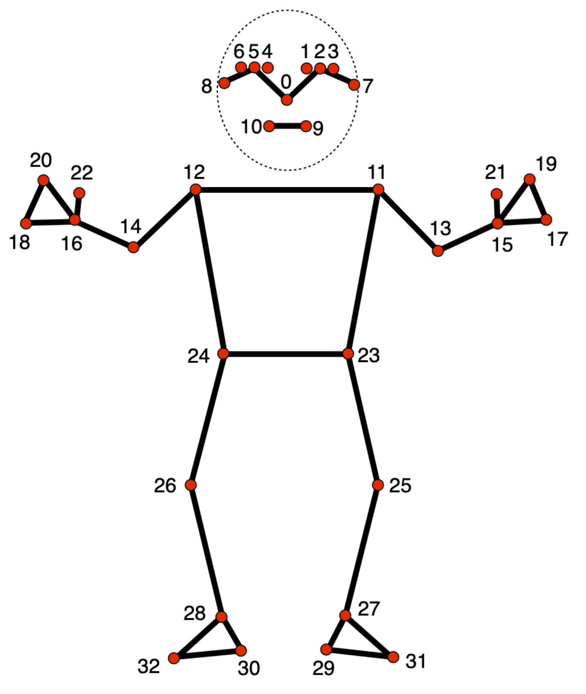

Skeletons¶
CamKit3D defaults to the MediaPipe Pose skeleton (BlazePose, 33 landmarks, MediaPipe 0.10.21). However the package is skeleton-agnostic by design: nothing in the 2D detection, 3D triangulation, viewer, or analysis code hard-codes which landmarks exist or how they connect. Instead, every pipeline reads a skeleton descriptor — a small YAML file that defines the landmarks, how they group into body parts, how they connect into a drawable skeleton, and a few reference points used for orientation and quality control.
This means you can swap MediaPipe for any other pose estimator you wish.
What is a skeleton?¶
A skeleton is a named set of landmarks and the relationships between them.
- What are the points? An ordered list of landmarks, each with an index, a name, the body part it belongs to, and its left/right/center side.
- How do they group? Named sets of landmarks (
face,torso,left_hand, …) used for colouring and per-part confidence thresholds. - How do they connect? Pairs of landmarks joined by a "bone" when the skeleton is drawn.
- Where are the reference points? Anatomical anchors (hips, shoulders, nose) that orientation and alignment code uses to work out which way the body is facing.
The landmark index must be consistent with your data:
index N in the descriptor is column N in your (n_frames, n_landmarks, 3)
keypoint array.
Loading a skeleton¶
Skeletons are loaded by id, which is the filename of the descriptor
(mediapipe_pose.yaml → "mediapipe_pose"):
from camkit3d import skeletons
pose = skeletons.load("mediapipe_pose") # load by id
pose = skeletons.load() # default skeleton (mediapipe_pose)
skeletons.available() # ['mediapipe_holistic', 'mediapipe_pose']
Once loaded, a skeleton provides everything the pipelines need:
pose.num_landmarks # 33
pose.names # ['nose', 'left_eye_inner', ...]
pose.index_of("left_wrist") # 15 — look up an index by name
pose.group_indices("face") # (0, 1, 2, ... 10) — one named group
pose.face_indices # [0..10] — role-resolved (see "Roles")
pose.hand_indices # [17..22]
pose.body_indices # everything that isn't face or hand
pose.anchor("left_hip") # 23 — anatomical reference point
pose.has_anchors("left_hip", "right_hip") # True
pose.edges # [(0, 1), (1, 2), ...] — skeleton connections
pose.edge_colors # ['#FF6B6B', ...] — colour per edge
pose.confidence_thresholds() # per-landmark threshold array, shape (33,)
Pipeline functions will accept a skeleton when relevant:
from camkit3d.pose3d import Pose3DProjector
projector = Pose3DProjector(
calibration_path=calib,
keypoints_dir=kp_dir,
skeleton="mediapipe_holistic", # id string or a loaded PoseDefinition
)
Default Skeleton: MediaPipe Pose (33 landmarks)¶
The baseline skeleton: a single person's body, 33 landmarks, with a real per-point visibility score.
face— 11 head points (0–10)torso,left_arm/right_arm,left_leg/right_leg— body partshand— 6 coarse hand points (17–22): pinky, index, thumb per side- anchors for hips, shoulders, nose, ankles

Alternative Skeleton: MediaPipe Holistic (543 landmarks)¶
The combined skeleton: body + dense face mesh + detailed hands, concatenated into one index space.
| Block | Indices | Count | Notes |
|---|---|---|---|
| pose | 0 – 32 | 33 | identical to mediapipe_pose |
| face | 33 – 500 | 468 | dense face mesh |
| left hand | 501 – 521 | 21 | full finger articulation |
| right hand | 522 – 542 | 21 | full finger articulation |
- Face/hand confidence is presence, not quality (see the note under
groups). The 468 face points especially do not triangulate well across cameras — they are designed for a single frontal view — so for 3D work you typically capture with face disabled and rely on pose + hands.
h = skeletons.load("mediapipe_holistic")
h.num_landmarks # 543
h.hand_indices # [501..542] — both hands, role-resolved
h.body_indices # the 33 pose points
Writing a new skeleton¶
- Create
src/camkit3d/skeletons/data/<your_id>.yaml. - Fill in
metadata(withskeleton_id: <your_id>matching the filename),landmarks,groups, andconnections. Addanatomyif you want orientation/alignment to work, androlesif your hand/face groups aren't namedhand/face. - Load it:
skeletons.load("<your_id>"). Fix any validation errors. - Use it: pass
skeleton="<your_id>"to the pipelines.
When making the YAML file, only metadata,landmarks, groups, and connections
are required. See the default CamKit3d YAML file for more details.
Quick reference¶
| Method / property | Returns |
|---|---|
load(id="mediapipe_pose") |
a validated PoseDefinition (cached) |
available() |
sorted list of skeleton ids |
.num_landmarks |
landmark count |
.names |
landmark names, ordered by index |
.index_of(name) |
index for a landmark name |
.group_indices(group) |
indices in a named group |
.face_indices / .hand_indices / .body_indices |
role-resolved index lists |
.anchor(role) |
index for an anatomical role |
.has_anchors(*roles) |
whether all given roles are defined |
.edges |
list of (start, end) connections |
.edge_colors |
hex colour per edge |
.confidence_thresholds() |
per-landmark threshold array |